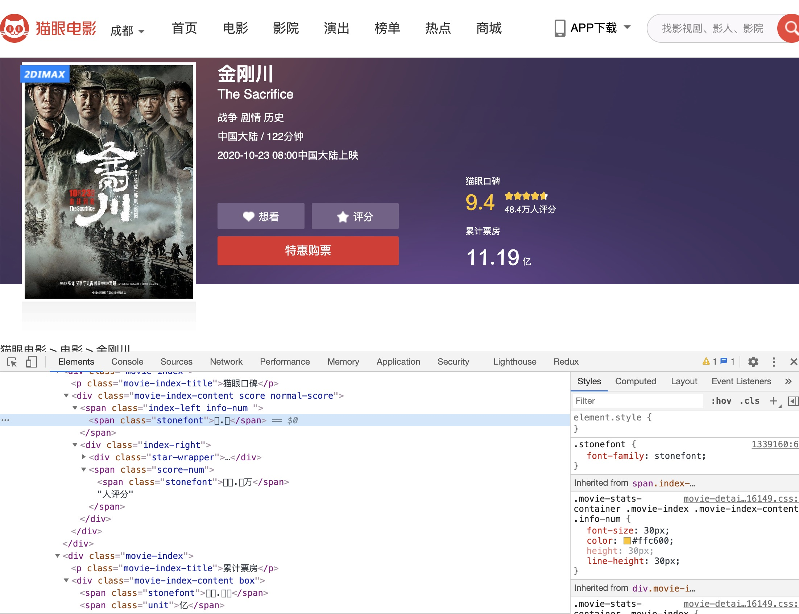
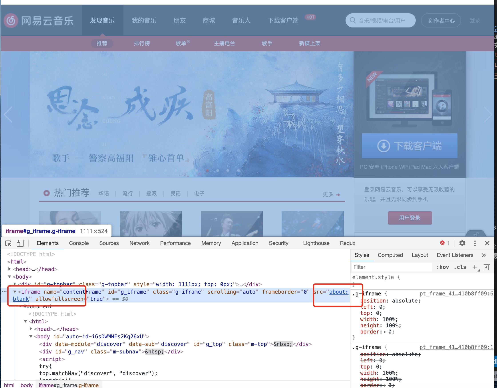

前端如何保护数据/反爬虫
为什么需要保护数据?
案例：FONT-FACE拼凑式
案例：BACKGROUND拼凑式
案例：字符穿插式
案例：伪元素隐藏式
案例：元素定位覆盖式
案例：IFRAME异步加载式
案例：字符分割式
案例：字符集替换式
服务端如何反爬虫
为什么需要保护数据
对于一张网页，我们往往希望它是结构良好，内容清晰的，这样搜索引擎才能更好的爬取其内容，提升网站相应的排名。 而反过来，又有一些情景，我们不希望内容能被轻易获取，比方说电商网站的交易额以及商品信息，教育网站的题目等。因为这些内容，往往是一个产品的生命线（公司的核心竞争力），必须做到有效地保护。这就是今天“前端如何保护数据/反爬虫”的由来。
FONT-FACE拼凑式

猫眼电影里，对于票房数据，展示的并不是纯粹的数字。 页面使用了font-face定义了字符集，并通过unicode去映射展示。也就是说，除去图像识别，必须同时爬取字符集，才能识别出数字。
金刚川
BACKGROUND拼凑式
与font的策略类似，美团里用到的是background拼凑。数字其实是图片，根据不同的background偏移，显示出不同的字符。 （早期的美团使用BACKGROUND拼凑式，现在也使用FONT-FACE拼凑式了）
美团
字符穿插式
汽车之家里，把关键的厂商信息，做到了伪元素的content里。 这也是一种思路：爬取网页，必须得解析css，需要拿到伪元素的content，这就提升了爬虫的难度。
汽车之家
元素定位覆盖式
还有热爱数学的去哪儿，对于一个3位数字的机票价格，先用三个i标签渲染，再用三个b标签去绝对定位偏移量，覆盖故意展示错误的i标签，最后在视觉上形成正确的价格…，不过对于不同的价格还有其他玄机。
去哪儿
IFRAME异步加载式

网易云音乐页面一打开，html源码里几乎只有一个iframe，并且它的src是空白的：about:blank。接着js开始运行，把整个页面的框架异步塞到了iframe里面… 不过这个方式带来的难度并不大，只是在异步与iframe处理上绕了个弯（或者有其他原因，不完全是基于反爬虫考虑）
网易云音乐
字符分割式
在一些展示代理IP信息的页面，对于IP的保护也是大费周折。 他们会先把IP的数字与符号分割成dom节点，再在中间插入迷惑人的数字，如果爬虫不知道这个策略，还会以为自己成功拿到了数值；不过如果爬虫注意到，就很好解决了。
全网代理IP
字符集替换式
同样会欺骗爬虫的还有去哪儿的移动版。 html里明明写的3211，视觉上展示的却是1233。原来他们重新定义了字符集，3与1的顺序刚好调换得来的结果… 在字体文件中打乱数字的顺序，按照打乱后的数字来现实。
去哪儿的移动版
服务端如何反爬虫
User-Agent + Referer检测
账号及Cookie验证
验证码
IP限制频次
用户封禁
通过robots.txt来限制爬虫